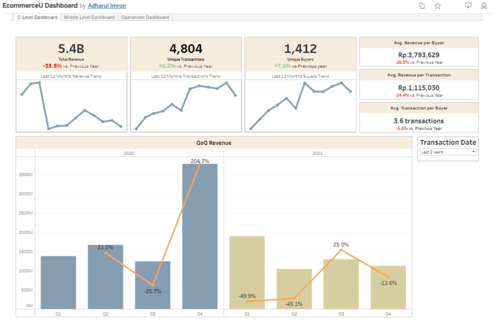
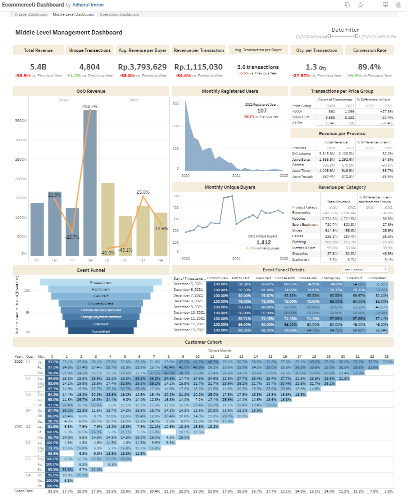
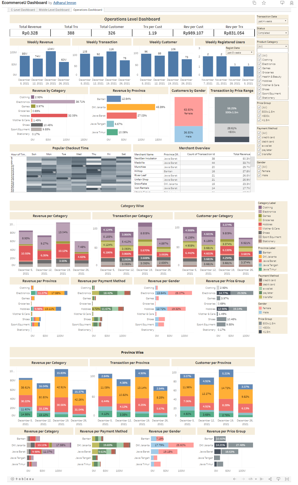
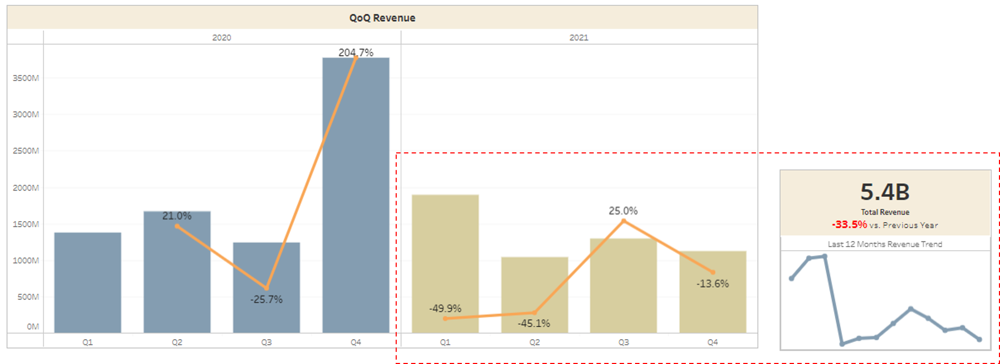
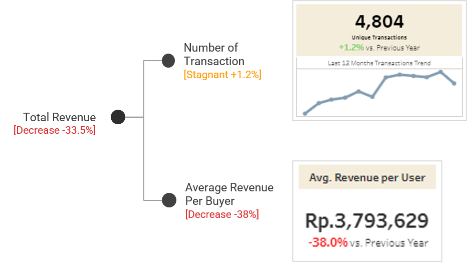
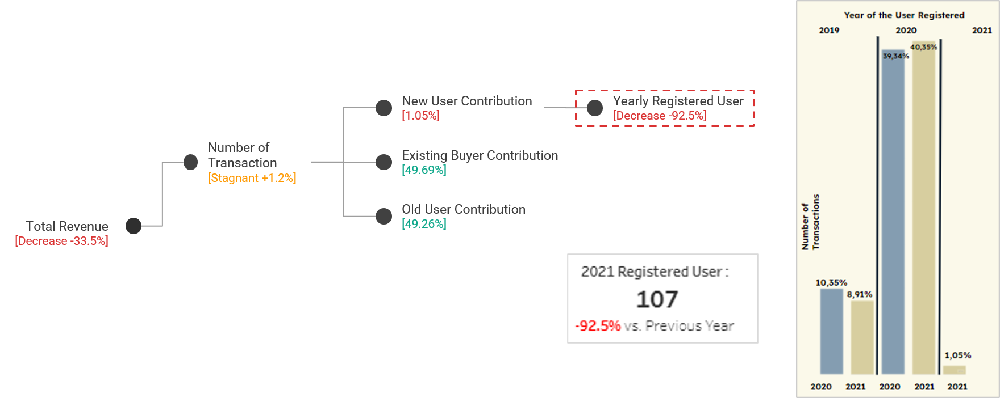
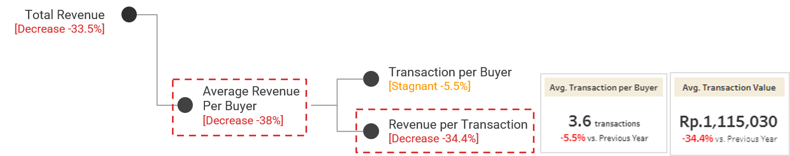
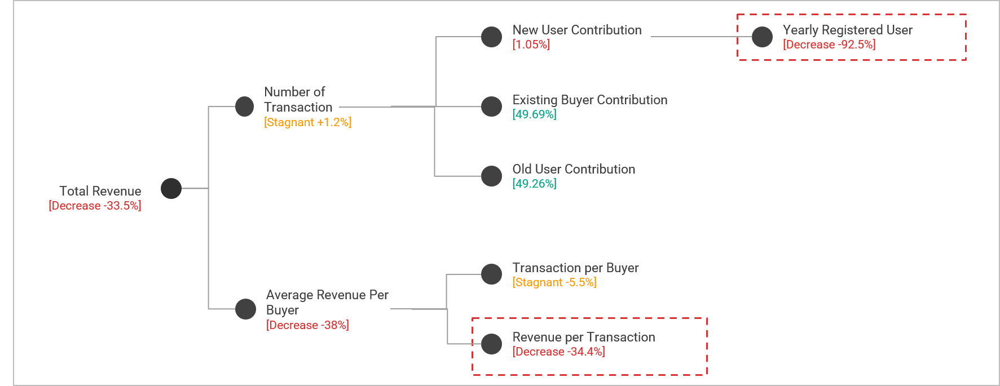
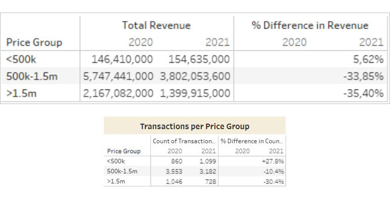

EcommerceU KPI Dashboard and Revenue Drop Diagnosis
About the project
EcommerceU Company is a growing e-commerce platform. This year (2022), EcommerceU Company seeks to change the way company make decisions to become more data-driven. Therefore, experts, as the person in charge of this change, tries to guide the Data Analyst team to provide the proper evaluation and advice regarding how data can be used to provide analysis on the decision-making process that occurs in EcommerceU Company.
As the first initiative, Expert is trying to redevelop the Business Performance Management process at EcommerceU Company. In this case, I am as a Data Analyst Associate (DAA) is expected to support this initiative by developing a Business Performance (KPI) Management Dashboard.
A KPI dashboard (or key performance indicators dashboard) is a management tool used by managers, VPs and everyone in the company who needs to have a birds-eye view of the business' performance, whether on an operational or strategic level and make better decisions.
Expected Outcome for The Dashboard
DAA need to create a specific dashboard for each of the following users in:
- Top Level Management (C-Level)
- Middle Level Management (Product & Sales)
- Operational Level Management (Marketing)
Dashboard
You can see the dashboard in my tableu public here.
Top Level Management (C-Level) Dashboard
In this dashboard we can see the company's performance in general. We can do a general analysis to see if there is a problem with revenue, whether it's a decrease in revenue value or a decrease in revenue growth.
Middle Level Management (Product & Sales) Dashboard
In this dashboard we can see the company's performance in more detail. We can also follow up on the questions asked by C-level. For example, there is a decrease in revenue caused by a decrease in revenue per customer, we can give an answer such as 'this is due to a change in the number of price group transactions, the low price group increases while the high price group decreases drastically' by looking at this dashboard.
Operational Level Management (Marketing) Dashboard
In this dashboard, detailed information to support operations such as for campaign or promo purposes can be obtained.
Insights and Recommendations
1. EcommerceU revenue declines in 2021
There is a sharp decrease in revenue generated by the eCommerceU throughout the year of 2021 compared to the previous year
The company suffers revenue loss of 33.5% from IDR 8.1 billion to IDR 5.4 billion.
2. The number of transactions has stagnated and the average revenue per buyer has decreased
There are two indicators that we can see why revenue in 2021 is declining, those are the number of transactions and average revenue per buyer.
The number of transactions in 2021 experienced a slight increase of 1.2%, or we can say stagnant, from 4,745 transactions to 4,804 transactions.
On the other hand, average revenue per buyer decreased significantly by 38% from Rp6,116,034 to Rp3,793,629.
3. The stagnation in the number of transactions is due to the drastic decrease in the number of new registered user
What makes there is no significant development from the aspect of the number of transactions is the small number of new registered user transactions. Their contribution to the number of transactions is only 1%. This is due to a significant decrease in the number of new registered user in 2021, which is a decrease of 92.5%.
Fortunately, there is an increase in buyers from the side of users who have never transacted at all (old users) and existing buyers.
The decrease in the number of new registered user in 2021 can be caused by a lack of performance from the marketing funnel (awareness, acquisition, activation). Or it could be caused by external factors such as competitors or the country's economic conditions.
4. The decrease in average revenue per buyer was caused by a decrease in revenue per transaction
On another indicator, what caused the drastic decline in the aspect of average revenue per buyer was a 5.5% decrease in the number of transactions per buyer and a 34.4% decrease in revenue per transaction from Rp1,698,827 to Rp1,115.030.
5. Big picture problem
Next, we will discuss what might be the cause of the decrease in revenue per transaction.
6. The decrease in revenue per transaction is due to changing user behavior, preferring low-priced goods
There is a decrease of 38% average revenue generated per buyer even though the number of average transaction per buyer only decreased by 5.5%.
There are several reasons that might be the reason why the number of average transaction does not show the same decline as average revenue per transaction generated.
On the graph below, we identified that product with price below IDR 500,000 shows increase in revenue generated of 5.62%, the other 2 price groups show significant decline in revenue generation. Product with price between IDR 500,000 - IDR 1,500,000 shows decline of 33.85% in revenue generated and the product with price above IDR 1,500,000 shows steep decline of 35.40%.
The number transactions per price group are also showing the same pattern as revenue generation per price group.
Recommendations
- For the problem of decreasing new registered users, we still need to analyze it more deeply whether the error is in the campaign target, campaign content and design, lack of massive campaign, landing page, etc.
- As for the problem of changes in customer behavior, namely customers prefer low price good, we also still need to analyze it further to ascertain whether this problem is due to external factors that affect customer transactions, or due to lack of variety in product types, out of stock, etc.
- However, one thing is certain, if we look at the table of revenue per price group and the number of transactions per price group, we find that the decrease in transactions for the 500k-1.5m goods category was the smallest, but was the biggest contributor to the decline in revenue (almost 2 million). Thus, customers who buy products with this price range must be properly maintained. In fact, we need to get this characteristic segment to be our target market from the start. Currently eCommerceU still doesn't have customer segmentation at all, it's a good idea to start by making customer segmentation first.